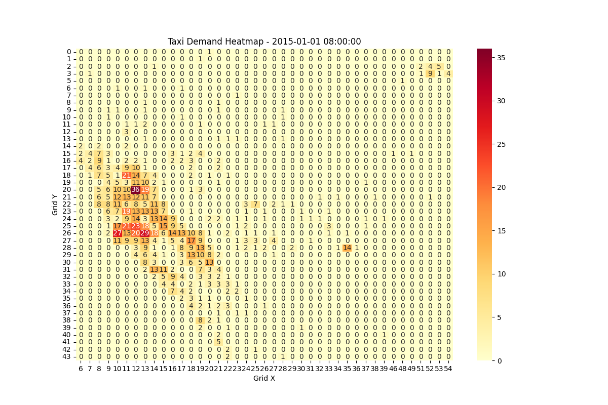
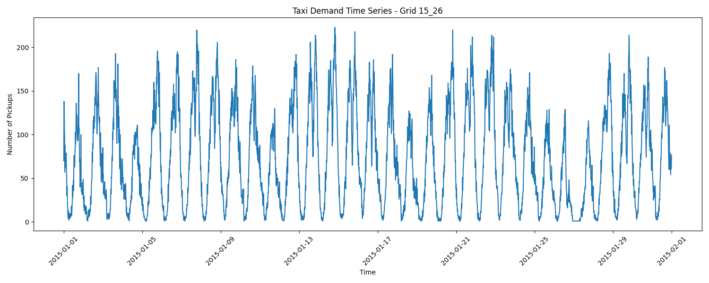
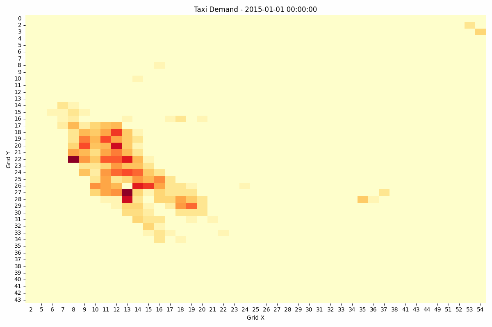
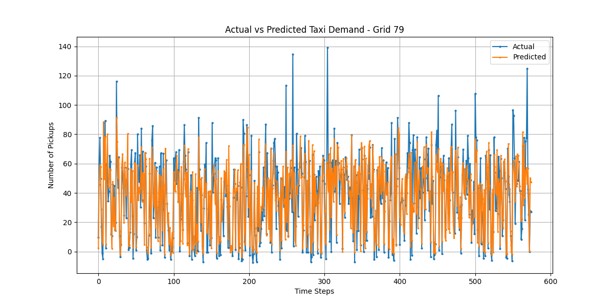
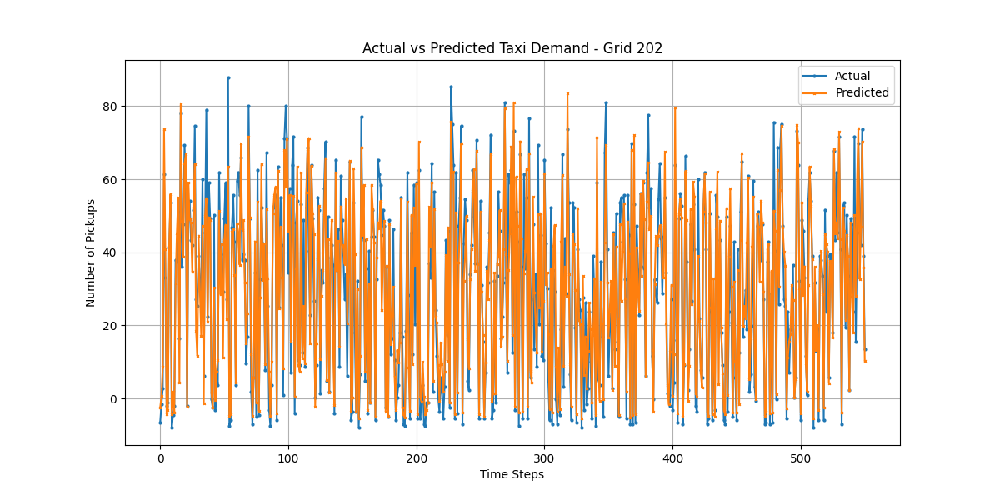
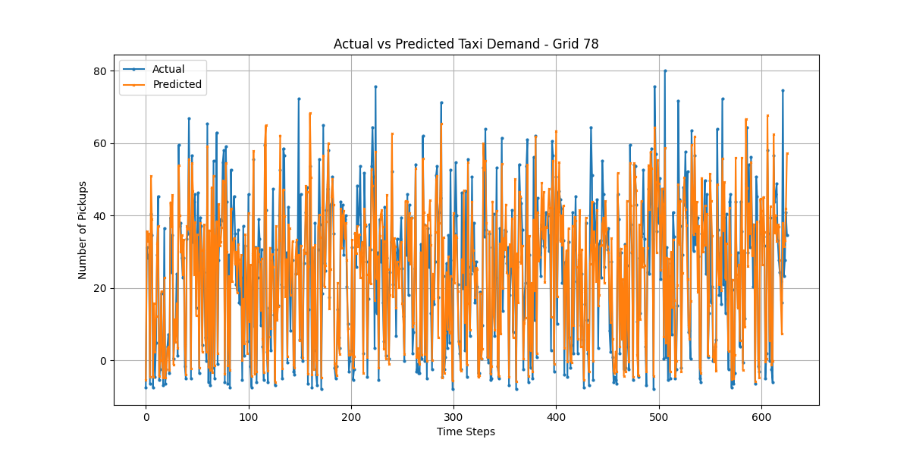
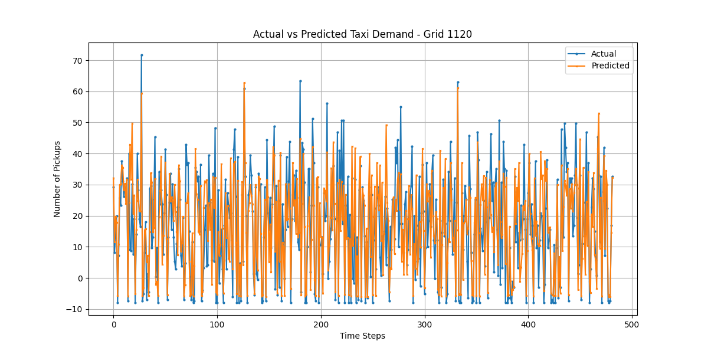

Our deep learning model achieves high accuracy in predicting taxi demand across different traffic areas in NYC. The model was trained and tested on 2015 NYC taxi data.
Best performance in commercial districts and tourist areas
Balanced performance in mixed-use areas
Challenging areas with irregular patterns
The spatial analysis reveals distinct patterns in taxi demand across NYC's grid system. Key findings include:
Explore the interactive map to see real-time demand patterns across NYC. Click on any grid to view detailed statistics.
The heatmap shows the concentration of taxi demand across the city. Darker colors indicate higher demand areas.
Our analysis reveals several significant temporal patterns in taxi demand:
The time series plot shows the evolution of demand over time, highlighting daily, weekly, and seasonal patterns.
The animation shows how demand patterns evolve throughout the day, highlighting the dynamic nature of taxi demand.
Detailed analysis of model performance across different grid types:
Analysis of high-traffic grids showing actual vs. predicted demand patterns.
 Analysis of medium-traffic grids showing actual vs. predicted demand patterns.
 